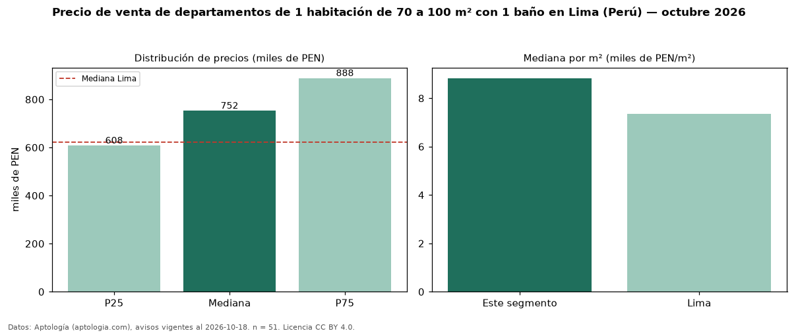

Precio de venta de departamentos de 1 habitación de 70 a 100 m² con 1 baño en Lima (Perú) — octubre 2026
Con 51 avisos vigentes, el precio mediano de departamentos de 1 habitación de 70 a 100 m² con 1 baño en venta en Lima (Perú) es PEN 752.250. Frente a la mediana de los departamentos de 1 habitación de 70 a 100 m² en venta de Lima (PEN 721.000, n = 99), queda 4 % por encima; este segmento reúne el 52 % de esos avisos. Por metro cuadrado, la mediana es PEN 8.830/m² (n = 51), 2 % por encima de los departamentos de 1 habitación de 70 a 100 m² en venta de Lima (PEN 8.682/m²). El área mediana anunciada es 79 m². La mediana de todos los departamentos en venta de Lima es PEN 621.600 (+21 % de diferencia). La mitad central de los avisos va de PEN 607.700 a PEN 888.125 (razón 1,5), una dispersión moderada. Datos: Aptología (aptologia.com), CC BY 4.0 — https://www.aptologia.com/pe/venta/lima. Archivos: PDF, CSV con las cifras y gráfica PNG.

| Avisos únicos | 51 |
|---|---|
| Percentil 25 | COP 607.700 |
| Mediana | COP 752.250 |
| Percentil 75 | COP 888.125 |
| Mediana por m² | COP 8.829 |
Fuente: avisos vigentes de portales inmobiliarios recopilados por Aptología, deduplicados (mínimo 30 avisos únicos por celda). Precios pedidos, no cerrados. Fecha: 2026-10-18.